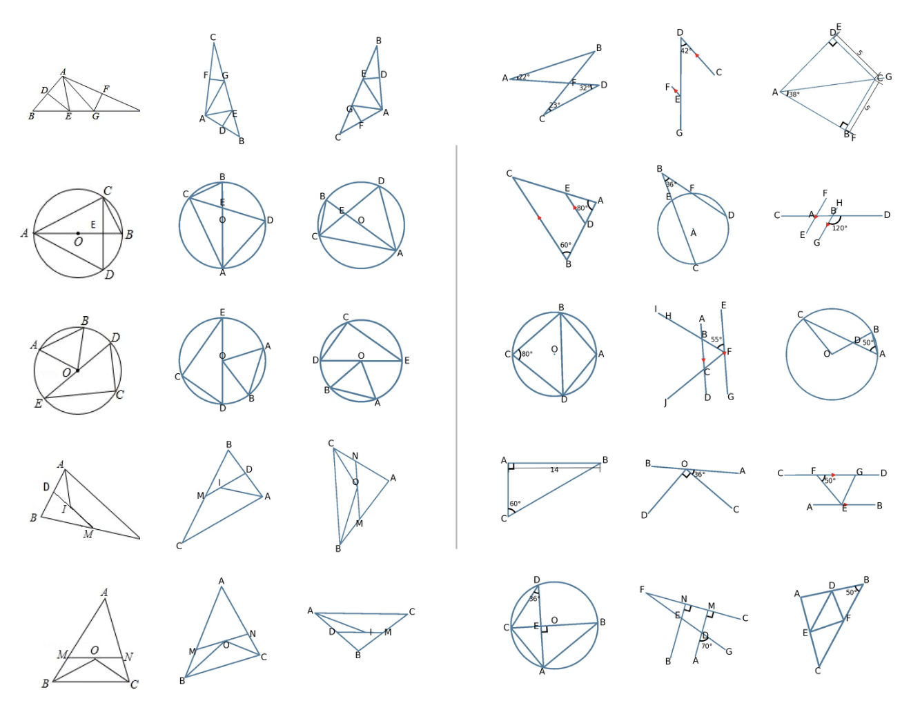

Wending Gao
B.S. Student in Applied Mathematics
Email: wending.gao25@student.xjtlu.edu.cn
GitHub: github.com/wendinggao
Location: Shanghai, China
About Me
I am a first-year undergraduate student expecting to complete my BSc degree in Applied Mathematics at the University of Liverpool in 2029. I am currently seeking research internships or visiting student opportunities. If you are interested in my research, please feel free to contact me.
My research interests span machine learning and math reasoning. In my spare time, I also engage in research on multimodal large language models and geometry problem solving.
Education
- B.S. in Applied Mathematics, University of Liverpool 2025.09 - 2029.06 (Expected)
Publications
-

Omni-Geo: Full-Domain Geometry with Multimodal Diagram Generation
Ruoran Xu, Wending Gao, Haoyu Cheng, Chengrui Zhang, Maizhen Ning, Qiufeng Wang
ECCV 2026 (Under Review)
Projects
-
Autoformalizing Analytic Geometry: Bridging Natural Language and Algebraic Proofs
Building a neuro-symbolic engine that translates natural language geometry problems into Lean 4 code using coordinate algebra, and automates rigorous proofs via Gröbner bases and Cylindrical Algebraic Decomposition. Includes a curated benchmark (AnalyticBench) of 200+ problems across linear systems, conic sections, and optimization.
Skills
| Programming | Python, C/C++, MATLAB, Lean |
| Frameworks & Tools | PyTorch, TensorFlow |
| Research Areas | Machine Learning, Math Reasoning, Autoformalization |
| Languages | Chinese (Native), English (Fluent) |